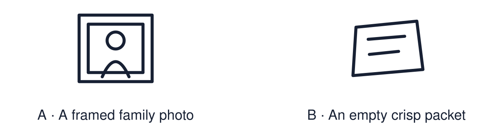

Arrival choices
You can begin without previous learning. Word help: special means important to someone for a reason.

Start with 1 and 2. Try 3 and 4 when ready. Reading and exact scribing are available.
1 What does special mean?
Support: Use the reminder strip or talk it through with an adult.
2 Which meaning fits special?
Support: Choose: Important to someone for a reason OR Special and holy to people of a faith.
3 Why is the watch special to Mina?
Support: Use the model evidence anchor A or read one relevant card together.
4 Does an object have to cost a lot to be special?
Support: Give a reason when ready.
Stretch: use a precise example or explain which detail supports your answer.
Evidence cards
Read, point or listen. Keep the source label with any detail you use.
A Mina’s watch
Fictional case: Mina wears an old watch. It was her grandad’s. It does not cost much. It matters because it reminds her of him.
Source: Authored classroom case
Limit: This example does not describe every person, family or community.
B A team shirt
Fictional case: Jay keeps a football shirt from his first match. The shirt holds a memory of a good day with his brother.
Source: Authored classroom case
Limit: This example does not describe every person, family or community.
C A sacred object
Some objects are sacred to people of a faith. A sacred object is linked to belief and is treated with great respect, for example a holy book.
Source: Authored RE summary
Limit: People in the same faith can treat objects in different ways.
D Reasons cards
An object can be special because of a person, a memory, a belief or a place. The price does not decide it.
Source: Authored classroom resource
Limit: A reason card is a prompt. The owner decides what the object means.
Shared investigation
1. Match each object to a possible meaning.
2. Say which reason card fits: person, memory, belief or place.
Work with a partner or adult, or use your own table. One person suggests; the other checks the evidence. Swap after one turn. Passing is allowed.
Move or match the cards
| Cards to use |
|---|
| A holy book |
| First-match football shirt |
| Grandad’s watch |
Possible labels: A belief / A memory / A person
Support: Show two choices. Read one short instruction. Point, match or say a word, then add a reason when ready.
Further challenge: Explain how an object can be special without being expensive.
Supported independent task
Complete this route only. Talk about what is special to me and give one reason why.
1. Choose one object card or draw an object.
2. Point to a reason card: person, memory, belief or place.
3. Say or finish: ___ is special because ___.
Support: Show two choices. Read one short instruction. Point, match or say a word, then add a reason when ready. Complete the organiser one space at a time. ___ is special because ___.
An adult may read or scribe your exact response. They should not choose the answer.
Standard independent task
Complete this route only. Talk about what is special to me and give one reason why.
1. Choose, draw or describe one special object. It can be fictional.
2. Write or say one reason it matters.
3. Name the type of reason: person, memory, belief or place.
Support: ___ is special because ___.
Check the required evidence and revise one detail.
Stretch independent task
Complete this route only. Talk about what is special to me and give one reason why.
1. Describe one special object and give a reason.
2. Explain why the same object might not be special to someone else.
3. Link your idea to how people of a faith treat sacred objects.
Support: Choose the evidence independently. Use the frame only if it helps.
Explain how an object can be special without being expensive.
Exit ticket
Choose a response mode. You may give your answers privately to an adult.
Why is the watch special to Mina?
Does an object have to cost a lot to be special?
Support: ___ is special because ___.
Further challenge: Explain how an object can be special without being expensive.